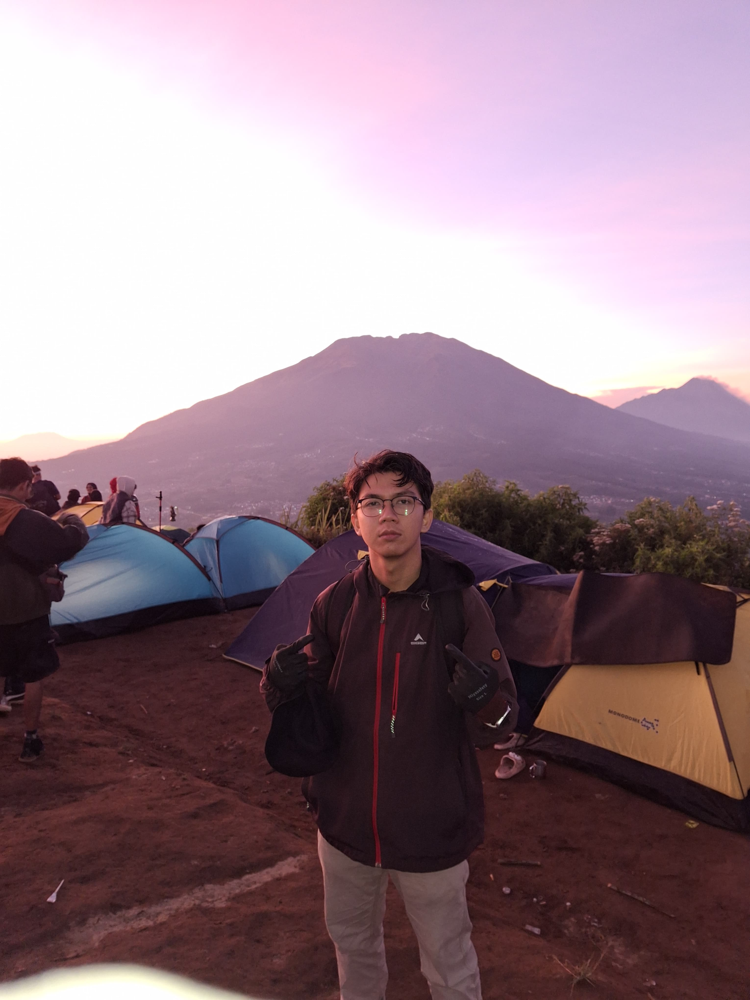

Tentang Saya
Perkenalkan, nama saya Naufal Haidar Nityasa. Saya adalah mahasiswa di Universitas Amikom Yogyakarta dengan keahlian di bidang front-end development.
Saya tertarik pada pengembangan antarmuka pengguna yang interaktif dan estetis. Melalui proyek-proyek yang telah saya kerjakan, saya berusaha untuk menggabungkan desain yang menarik dengan fungsionalitas yang intuitif. Saya memiliki pengalaman dalam penggunaan HTML, CSS, dan JavaScript, serta beberapa framework front-end seperti React. Selain kuliah, saya aktif mengasah keterampilan saya melalui proyek-proyek pribadi dan kolaborasi dengan teman-teman. Bagi saya, setiap proyek adalah peluang untuk mempelajari sesuatu yang baru dan meningkatkan kemampuan teknis maupun soft skills, seperti komunikasi dan manajemen waktu. Ke depan, saya berencana untuk terus mengembangkan keterampilan di bidang front-end development serta mempelajari lebih dalam tentang teknologi web terbaru. Saya berharap dapat berkontribusi di dunia industri kreatif dan teknologi serta menghadirkan pengalaman yang menyenangkan bagi pengguna.